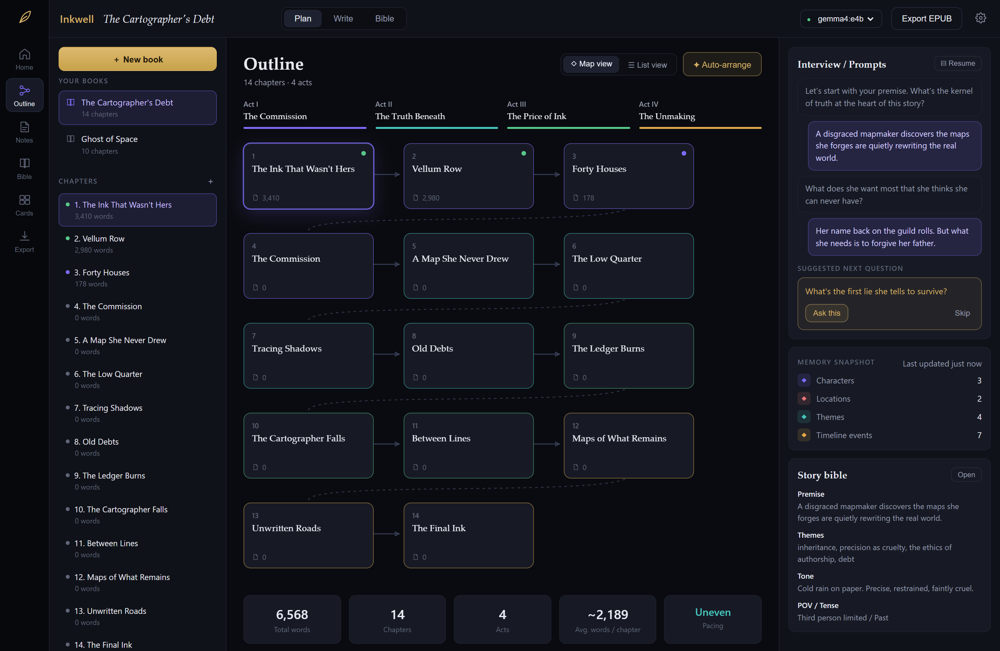
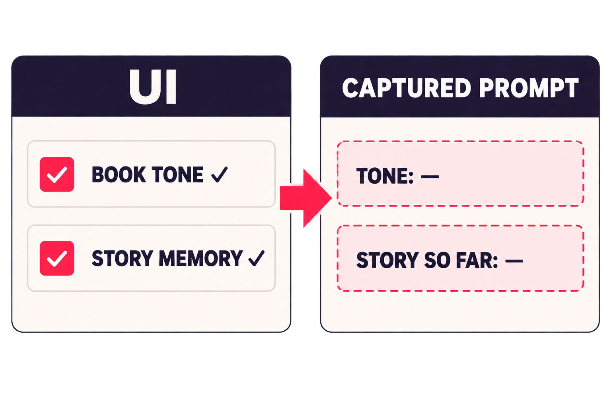
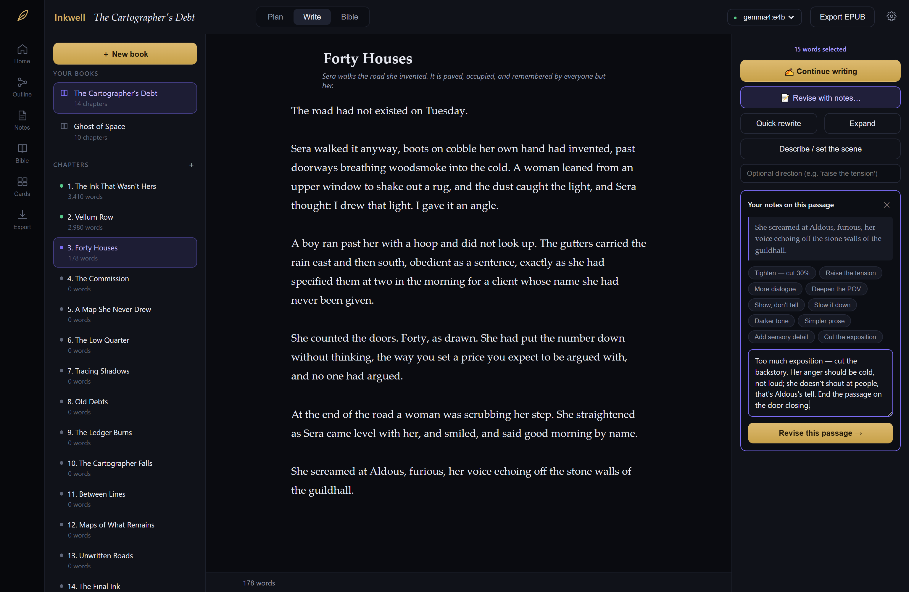
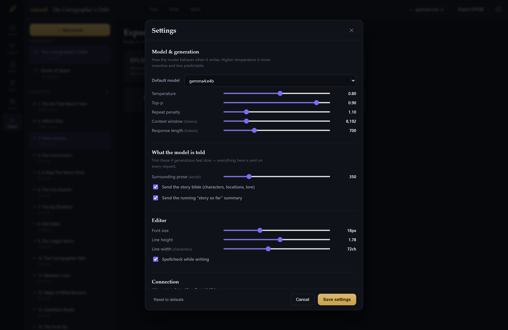
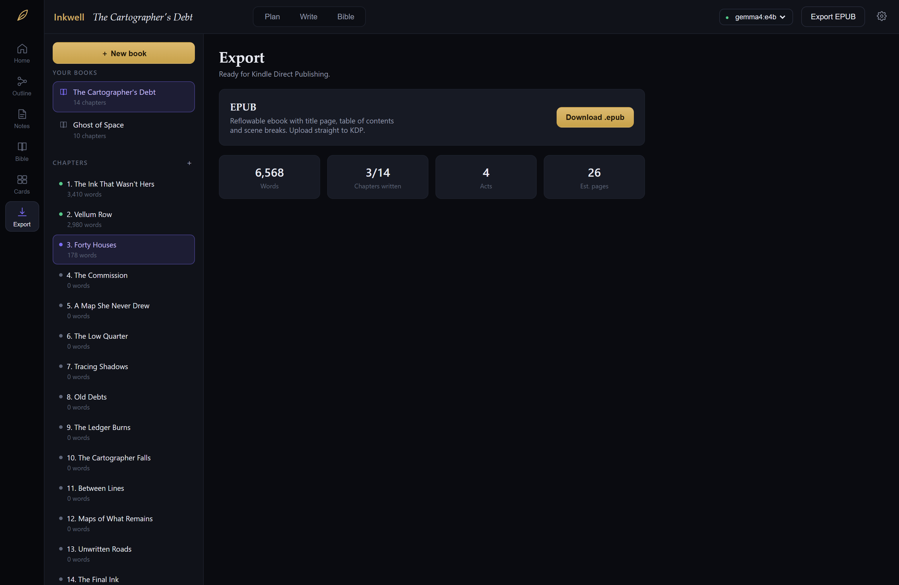

Help writers find the story—without renting their imagination.
A local-first AI writing studio designed around author interviews, durable story memory, and the belief that the tool should maintain the system while the writer keeps the voice.
ResearchInterviews with three published and independent authors
My roleFounder · Product strategy, research, design, and development
ProductLocal AI planning, writing, revision, page design, and export
01 · Inkwell
Problem space · Cloud AI writing
The starting tension
Writing tools added a meter to an already vulnerable process.
Cloud writing AI
Monthly cost did not feel proportional to the work coming back.
Every experiment spent tokens. Every rewrite raised the feeling of cost. Manuscripts lived on someone else’s infrastructure, while authors still had to repair generic output and lost context.
∞Ideas should be explored freely—not rationed by a usage meter.
◷
Token anxietyWriters second-guessed exploration because every prompt felt metered.
⌁
Context decayLong stories drifted as characters, motives, and earlier decisions fell out of view.
⌂
Manuscript trustA private creative work required confidence about where the text lived and traveled.
≈
Generic outputMore text was easy. More useful, story-specific thinking remained hard.
3author interviews grounded the product direction
Inspiration stallsThe central idea arrives before the complete story does.
Details are difficultCharacters, motives, settings, and connective tissue take sustained work.
Writing is mobileIdeas appear away from the desk—in notebooks, kitchens, and quiet moments.
02 · Problem + research
Research synthesis · Product opportunity
The core insight
Authors rarely lack an idea. They lack the details that make it hold.
“The difficult part is not producing more words. It is discovering the choices that make this story specific.”
01
A broad concept
A world, character, or emotional hook exists—but many foundational choices remain implicit.
→
02
The blank middle
Motives, relationships, constraints, turning points, and consequences need to be uncovered.
→
03
A story with gravity
Specific choices create a narrative that can support planning, drafting, and revision.
Product opportunity
Turn AI from a text vending machine into a developmental partner that asks better questions, records the author’s decisions, and builds a useful structure around them.
Product principleHelp the author think. Never impersonate the author.
03 · Product insight
Core experience · Interview editor
The first product hypothesis
Start with a conversation, not an empty document.
1
Begin broadlyPremise, genre, point of view, and the seed of the story.
2
Explore dimensionsCharacter, relationships, conflict, world, structure, meaning, and voice.
3
Reflect specificsEach question uses what the author already said rather than a generic checklist.
4
Build the spineAnswers become the outline and Story Bible—not disposable chat history.
Story interview
character ✓world ✓relationshipsconflictstructuremeaningvoice
The maps can change the real world. What does Mara want badly enough to risk changing a place she loves?
She wants to restore her family’s name, but every correction erases something only she remembers.
Next dimension · relationshipsWho is the one person that notices Mara grieving places that, to everyone else, never existed?
Breadth before rabbit holesThe interview maps the full idea before drilling into one intriguing detail.
One question at a timeA focused answer is easier than completing a giant creative questionnaire.
Author-controlledEvery answer stays visible, editable, skippable, and reusable.
04 · Interview editor
System design · Context ownership
The anti-amnesia system
The tool maintains the story. The model performs one task at a time.
Whole bookStory BibleCharacters, places, themes, tone, style, and a running “story so far.”
＋
Current chapterPlanned beatsThe immediate intent: chapter summary, events, and the next structural obligation.
＋
Local proseRecent wordsThe nearby paragraphs preserve rhythm, grammar, and continuity at the cursor.
→
Assembled requestOne bounded jobContinue, revise, expand, describe, summarize, or plan—using the context needed for that action.
CharactersIdentity, role, arc, and fixed visual details
Locations + loreRules the prose should not quietly contradict
Tone + styleThe emotional and linguistic register to hold
Running memoryEarlier events, character states, and open threads
My AI product mantraHave AI build you the calculator instead of asking it to be the calculator every time.
05 · Context architecture
Product experience · Plan to prose
The writing studio
Structure, memory, and revision live beside the manuscript.

PlanA navigable story spine
Act-colored chapters, causal beats, pacing information, and the interview remain visible as the story takes shape.
Inkwell runs against a model on the author’s own machine. There is no account, no per-word cost, and no need to send a manuscript to a third-party writing service.
✎
AuthorBrowser or tabletThe studio works at the desk or elsewhere on the same local network.
→
I
InkwellContext engineAssembles the interview, Story Bible, chapter plan, and local prose.
→
◇
Local inferenceOllama + GemmaCapable local models support planning and prose without a usage meter.
No token anxietyExplore, reject, and retry without mentally pricing every creative branch.
Manuscript stays localThe author controls ordinary files that can be backed up, moved, or versioned.
Lightweight product surfaceThe browser is the interface; one local service owns model and file access.
DesktopDeep planning, drafting, and layout
PhoneCapture ideas when creativity is away from the desk
TabletRead, revise, and interview from the couch
External accessFuture work: secure use beyond the local network
Design decisionCloud models remain an optional escape hatch for machines that cannot run locally—not the product’s default assumption.
07 · Local-first system
Product validation · Model-boundary testing
The most important discovery
The UI worked. The model never got the message.
Book tone and narrative memory looked complete in the product. The output was close enough to seem credible. Inspecting the request at the model boundary exposed two different failures.

Conceptual visualization of the captured-prompt finding.
Gap 01 · ToneSaved and displayed, but omitted from writing prompts.The interface proved storage—not delivery to the model.
Gap 02 · Story memoryThe prompt could include a summary, but the normal workflow never populated one.The “send summary” switch had nothing to send.
The fixAdd tone to every writing system prompt. Connect chapter changes to summary generation and track coverage.The memory display now reports what has actually been folded in.
Lesson for AI product teamsDo not test only the interface or the answer. Capture and inspect what actually reaches the model.
08 · Testing discovery
Product evolution · From draft to book
Expansion through user requests
The writing tool became a path toward a finished object.
After the first release, users asked for artwork, chapter-head details, and more control over the final book. Those requests expanded the product from drafting assistance into page design and experimental visual publishing.

Editorial controlNotes, revision, and diff
Writers direct the change and accept only the version they want.

Personal setupModel and context controls
Local inference, generation behavior, voice, and memory remain visible.

PublishEPUB and page design
Move from Markdown files toward an upload-ready book artifact.
ExperimentalPicture books + local art
Locked character and style descriptions support lightweight visual stories.
Chapter ornamentationUnique lettering, symbols, and visual identity at chapter openings
Visual booksSpread planning, restrained text, and locally generated 2D imagery
Broader accessSecure ways to write outside the home network remain future work
09 · Product evolution
Reflection · Product design practice
What Inkwell demonstrates
Good AI products do more than generate. They preserve intent.
Inkwell reframed writing assistance as a product system: help authors discover stronger choices, keep their story coherent, retain control of their voice, and understand what the model is actually being told.
ResearchStart with the creative hurdleThree author interviews shifted the problem from “write more” to “help me find the details.”
ArchitectureMake context a product featureThe Story Bible and layered prompts place continuity in the tool instead of hoping the model remembers.
ValidationTest the model boundaryPlausible output hid broken wiring. Captured prompts turned intuition into observable evidence.